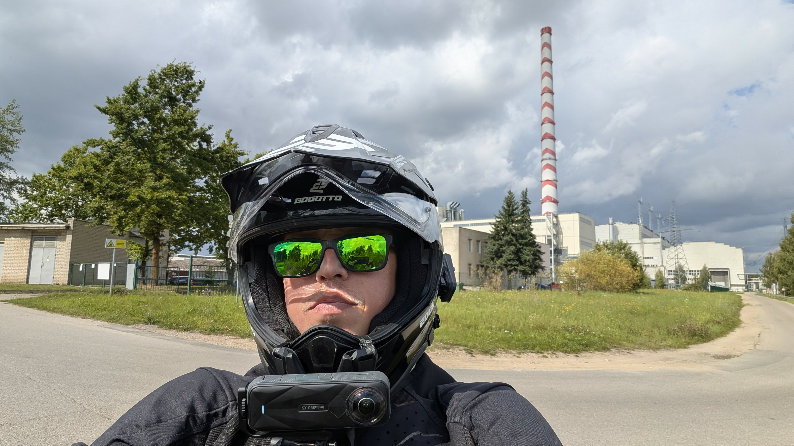
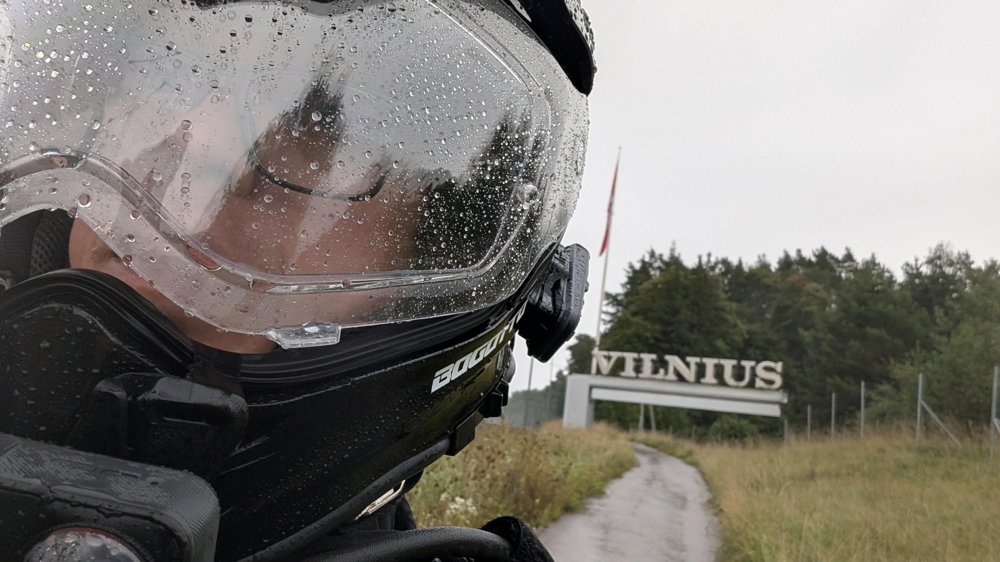

Rytą išriedėjau iš Rumšiškių su savo Lynx-S, vienas, žinodamas, kad laukia ilgiausia diena balansuojant ant vieno rato, kokią esu bandęs. Planas atrodė tvarkingas popieriuje, bet realybė parodė, kad praktika nuo teorijos skiriasi.
Pirmieji kilometrai parodė, kad navigacija mane nuvedė tiesiai per laukus — vieškelis, kuris žemėlapyje atrodė kaip kelias, greitai pavirto žemės ūkio technikos provėžomis. Provėžos buvo molingos ir drėgnos, ir per kelias minutes protektorius buvo taip užkimštas molio, kad ratas tapo praktiškai lygus, slidus kaip glaistytas. Neliko nieko kito, kaip ratą pastumti pėsčiomis, kol išlindau į padoresnį kelią. Ties tuo tašku (~20 km) pakėliau ratą ir pasukau jį ore — išcentrinė jėga per kelias sekundes išvalė protektorių nuo molio.

Toliau kelionė nusiramino. Vienas maloniausių momentų — trasa susidėliojo taip, kad pravažiavau pačiu Elektrėnų jėgainės rytiniu pakraščiu. Šį pastatą norėjau pamatyti iš arčiau jau seniai, tad tai buvo turbūt džiaugsmingiausia kelionės dalis. Dėliojant maršrutą dėmesį skyriau mažesnio intensyvumo kelių pasirinkimui, o ne ekskursinei jo daliai, tad jėgainės aplankymas buvo maloni ir netikėta staigmena.
Nusivylimą, nors ir suprantamą, atnešė keli paklydimai — trasa juk buvo suplanuota paskubomis, be gilesnės analizės ir žvalgybos. Dalis jų — vien dėl to, kad žemėlapyje pažymėti keliai realybėje neegzistavo, net takelio ten nebuvo. Vienas ryškiausių nuklydimų įvyko ties Abromiškėmis: tikėjausi, kad pavyks apvažiuoti kelio darbus, bet jie buvo užėmę visą kelio plotį — teko vietoje ieškoti naujo kelio, kas pridėjo dar vieną nuklydimą. Vievis buvo apvažiuotas pietiniu pakraščiu.
Antrasis „anomalijos" epizodas (~70 km, netoli Vievio–Trakų juostos) — vėl ta pati istorija: ratas ore, molis lauk iš protektoriaus.
Artėjant prie Vilniaus pradėjo lyti — lygiai taip, kaip rodė prognozė prieš startą.

Netrukus po to prasidėjo pati sudėtingiausia kelionės dalis techniniu požiūriu: tiek rato, tiek telefono baterijos artėjo prie nulio. Grigiškėse sustojau pasikrauti abu — bet senkanti telefono baterija sustabdė rato telemetrijos registravimą. Taip atsirado ta valandos „juodoji skylė" duomenyse. Gaila, kad neliko nuoseklaus įrašo, bet tai puiki pamoka — ateityje reikia geriau suplanuoti ir apskaičiuoti krovimo poreikius, kad tokių situacijų būtų galima išvengti.
Paskutiniai kilometrai iki Vilniaus oro uosto praėjo jau žinant, kad sunkiausia dalis liko už nugaros.
O šiaip — labai daug įspūdžių, daug naujos ir naudingos patirties. Jeigu turėčiau galimybę grįžti laiku atgal su dabartine patirtimi, nieko nekeisčiau — kiekvienas sunkumas, su kuriuo teko susidurti, davė vertingą pamoką, be kurios tokių kelionių planavimas liktų tik teorinis svaičiojimas, neturintis realaus pagrindo. Didžiausiu iššūkiu buvo psichologinis momentas dėl tokios ilgos kelionės — šiandien atrodo, kad tai buvo tik netinkamos perspektyvos padarinys, žiūrint į visą situaciją.
Pradžios ir pabaigos taškai (~500 m) apkarpyti privatumo sumetimais.
I rolled out of Rumšiškės in the morning on my Lynx-S, alone, knowing the longest day I'd ever attempted balancing on one wheel was ahead of me. The plan looked solid on paper, but reality showed that practice and theory are two different things.
The first kilometers showed that navigation had sent me straight across open fields — a track that looked like a road on the map quickly turned into farm-vehicle ruts. The ruts were muddy and wet, and within minutes the tread was so packed with mud that the wheel became practically smooth, slick as glazed. There was nothing to do but push the wheel on foot until I reached a decent road. At that point (~20 km) I lifted the wheel and spun it in the air — centrifugal force cleared the mud out of the tread in a few seconds.
After that the ride settled down. One of the best moments — the route worked out so that I passed right along the eastern edge of the Elektrėnai power plant. I'd wanted to see this building up close for a long time, so this was probably the most joyful part of the trip. When laying out the route I'd focused on picking lower-traffic roads rather than sightseeing, so getting to see the power plant was a pleasant, unexpected surprise.
The disappointing part, though understandable, was getting lost a few times — the route was put together in a hurry, without much deeper analysis or scouting. Some of it was simply because roads marked on the map didn't exist in reality — not even a path. One of the clearest wrong turns happened near Abromiškės: I'd expected to route around some roadworks, but they'd closed off the entire width of the road, so I had to find a new way on the spot, which added another detour. I went around Vievis along its southern edge.
The second "anomaly" episode (~70 km, near the Vievis–Trakai stretch) is the same story again: wheel in the air, mud out of the tread.
Approaching Vilnius, it started raining — exactly as the forecast had said before the start.
Shortly after, the most technically demanding part of the trip began: both the wheel's and the phone's batteries were approaching zero. I stopped in Grigiškės to charge both — but the phone's dying battery cut off the wheel's telemetry logging. That's what created that hour-long "black hole" in the data. It's a shame there's no continuous record, but it's a great lesson — I need to plan and calculate charging needs better in the future to avoid situations like this.
The last kilometers to Vilnius Airport passed knowing the hardest part was already behind me.
Overall, though — a lot of impressions, a lot of new and useful experience. If I could go back in time with the experience I have now, I wouldn't change a thing — every difficulty I ran into taught a valuable lesson, without which planning trips like this is just theoretical wishful thinking with no real grounding. The biggest challenge was the psychological weight of such a long trip — looking back today, it seems like that was simply the result of looking at the whole situation from the wrong perspective.
The start and end points (~500 m) are trimmed for privacy.